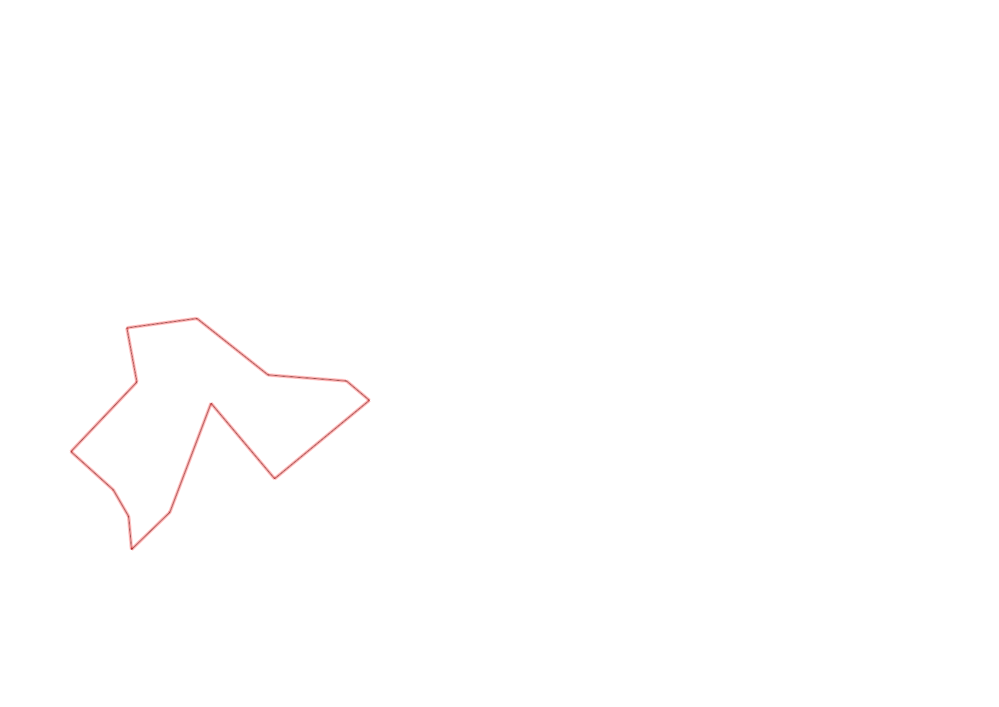
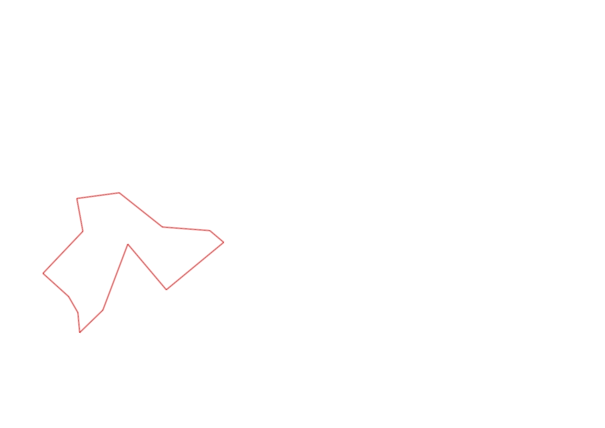

| Control |
Points |
Time Punched |
Distance |
Your Time |
Pace |
Place |
Fastest Time |
Median Time |
% Behind Fastest |
| 126 |
20 |
|
0.17 |
0:01:50 |
10:47 |
10 / 10 |
0:00:43 |
0:00:53 |
155% |
| 63 |
60 |
|
0.19 |
0:02:31 |
13:14 |
4 / 4 |
0:00:56 |
0:01:20 |
169% |
| 32 |
30 |
|
0.15 |
0:02:44 |
18:13 |
27 / 27 |
0:00:36 |
0:00:56 |
355% |
| 44 |
40 |
|
0.12 |
0:03:32 |
29:26 |
27 / 29 |
0:00:52 |
0:01:49 |
307% |
| 53 |
50 |
|
0.2 |
0:04:16 |
21:20 |
25 / 26 |
0:01:31 |
0:02:15 |
181% |
| 69 |
60 |
|
0.12 |
0:02:51 |
23:45 |
28 / 29 |
0:00:45 |
0:01:18 |
280% |
| 71 |
70 |
|
0.06 |
0:02:37 |
43:36 |
23 / 25 |
0:00:48 |
0:01:13 |
227% |
| 40 |
40 |
|
0.07 |
0:06:14 |
1:29:02 |
9 / 9 |
0:00:40 |
0:01:52 |
835% |
| 41 |
40 |
|
0.11 |
0:01:56 |
17:34 |
18 / 20 |
0:00:28 |
0:01:07 |
314% |
| 130 |
30 |
|
0.25 |
0:04:51 |
19:24 |
2 / 2 |
0:01:49 |
0:03:20 |
166% |
| 60 |
60 |
|
0.21 |
0:03:41 |
17:32 |
5 / 5 |
0:00:00 |
0:01:57 |
-% |
| 127 |
20 |
|
0.26 |
0:17:18 |
1:06:32 |
1 / 1 |
0:17:18 |
0:17:18 |
0% |
| Finish |
0 |
|
0.06 |
0:01:03 |
17:30 |
8 / 8 |
-1 day, 23:05:57 |
0:00:35 |
-99% |
Total Distance Covered: 1.97km
Points Scored: 520
Late Penalty: 0
Final Score: 520
Total Time: 0hours 55minutes 24seconds
Efficiency: 263.96 points/km
 
